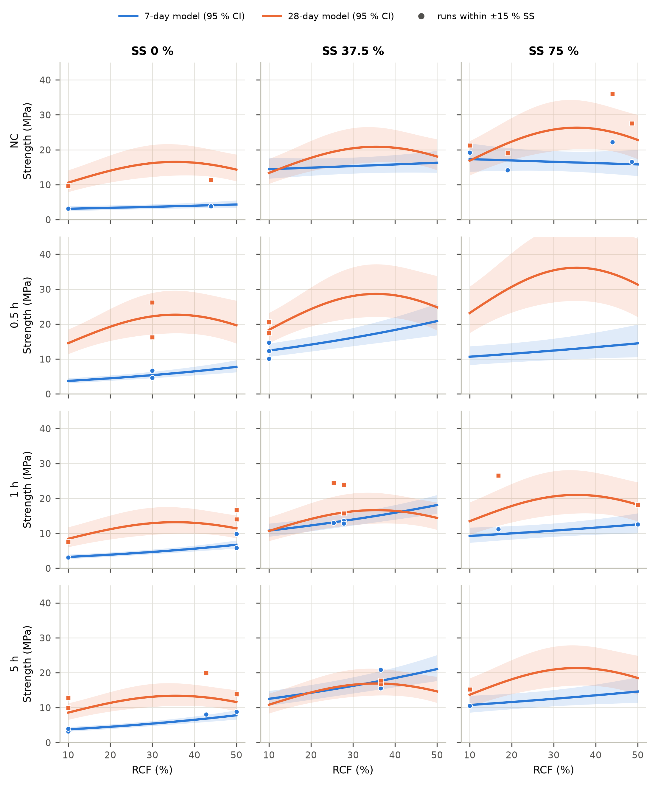

Compressive strength · 30 mixtures · two independent models
7-Day and 28-Day Strength Models
One model for the 7-day strengths and one for the 28-day strengths. Each was built from its own 30 results only, with the same protocol: ln scale chosen by Box–Cox, the same 16-parameter candidate set (RCF, A/B and SS up to quadratic terms, carbonation at four levels, carbonated × mixture slopes), an exhaustive AICc search of all 716 hierarchical models, and the same validation. The two are set side by side for comparison; this page does not judge whether one age's trends hold at the other.
Data: data/strength_7d_28d_corrected.csv · Analysis: analysis/run_separate.py · 2,000 resamples per scheme · built 2026-09-29
The two models
Coded units: A = (RCF − 30)/20, C = (A/B − 0.45)/0.03, D = (SS − 37.5)/37.5, K = 1 for carbonated RCF, Cx = carbonation-level indicators. Actual units: RCF and SS in %, C[·] = 1 for that level. Medians in MPa are exp(ln f). Evidence labels use one rule for both models: Robust p < 0.01 and kept in ≥ 90 % of residual-bootstrap and ≥ 80 % of subsample re-selections; Moderate p < 0.05 and ≥ 60 % of residual-bootstrap re-selections; Weak selected but short of Moderate; Hierarchy kept because a higher-order term contains it.
7-day model · 10 parameters · 30 mixtures
ln(f7) ~ RCF + SS + Carbonation (4 levels) + RCF × SS + SS² + Carbonated × RCF + Carbonated × SS
RCF HierarchySS RobustCarbonation (4 levels) HierarchyRCF × SS ModerateSS² RobustCarbonated × RCF ModerateCarbonated × SS Moderate
All selection criteria agree (AICc, BIC, backward elimination at α = 0.10 and 0.05). The carbonation terms are kept in 94 % of residual-bootstrap re-selections but in 33 % of subsamples of 24 mixtures, because they rest on the 8 uncarbonated mixtures.
SS is the only robust term. The selection is unstable: removing a single mixture changes the selected terms in 13 of 30 cases, subsamples of 24 mixtures re-select the model in 6 %, and nested cross-validation of the AICc procedure gives predicted R² −0.13 against 0.43 for the fixed terms. Carbonation enters as a level shift only (vs NC: 0.5 h ×1.37, 1 h ×0.80, 5 h ×0.81; carbonated levels differ, p = 0.005); the 0.5 h level rests on two compositions (mixes 1/12/19 and 10/14). Predictions for a new mixture are much less precise than at 7 days.
Terms side by side
Every candidate term, as each model sees it. For a term a model did not select, the coefficient is the value it takes when added to that model (with any parent terms it needs), and p is the added-term F test.
The same quantities computed from each model. Ratios compare two predicted strengths with 95 % CIs; a ratio of 1 with no interval means the term behind it is not in that model. A/B is held at 0.45 unless stated.
The grey "supplementary" columns are not part of either model. They refit one age's data with the other model's terms, so you can see what the omitted effects look like, with their uncertainty, when they are forced in. * 75 % (edge): the 28-day model has no SS² term, so strength rises to the highest SS tested.
SS
Carbonation
RCF (%)
7 d: SS at max [95 % boot]
28 d: SS at max
7 d: f(SS 0) / f(max)
28 d: f(SS 0) / f(max)
7 d: f(SS/SH = 2) / f(max)
28 d: f(SS/SH = 2) / f(max)
Suppl.: 28-day data, 7-day terms: SS at max
NC
10
61 % [52–72]
75 % (edge)*
×0.16 [0.12–0.21]
×0.63 [0.50–0.79]
×0.99 [0.95–1.02]
×0.95 [0.93–0.97]
65 %
NC
30
58 % [52–67]
75 % (edge)*
×0.19 [0.15–0.24]
×0.63 [0.50–0.79]
×0.97 [0.92–1.02]
×0.95 [0.93–0.97]
64 %
NC
50
56 % [46–64]
75 % (edge)*
×0.23 [0.18–0.30]
×0.63 [0.50–0.79]
×0.94 [0.87–1.01]
×0.95 [0.93–0.97]
62 %
1 h
10
52 % [42–58]
75 % (edge)*
×0.27 [0.22–0.33]
×0.63 [0.50–0.79]
×0.90 [0.82–0.99]
×0.95 [0.93–0.97]
52 %
1 h
30
49 % [42–54]
75 % (edge)*
×0.31 [0.27–0.36]
×0.63 [0.50–0.79]
×0.86 [0.78–0.95]
×0.95 [0.93–0.97]
50 %
1 h
50
46 % [40–51]
75 % (edge)*
×0.36 [0.30–0.43]
×0.63 [0.50–0.79]
×0.82 [0.72–0.92]
×0.95 [0.93–0.97]
49 %
RCF
Carbonation
SS (%)
7-day model
28-day model
Supplementary: 28-day data refitted with the 7-day terms
NC
0
×1.39 [1.01–1.92], p = 0.041
×1.35 [1.06–1.72], p = 0.016
×1.23 [0.64–2.36], p = 0.52
NC
25
×1.21 [0.93–1.58], p = 0.15
×1.35 [1.06–1.72], p = 0.016
×1.20 [0.69–2.09], p = 0.51
NC
50
×1.05 [0.80–1.38], p = 0.70
×1.35 [1.06–1.72], p = 0.016
×1.17 [0.67–2.04], p = 0.57
NC
75
×0.91 [0.66–1.25], p = 0.55
×1.35 [1.06–1.72], p = 0.016
×1.14 [0.59–2.20], p = 0.68
1 h
0
×2.08 [1.66–2.61], p < 0.001
×1.35 [1.06–1.72], p = 0.016
×1.40 [0.88–2.23], p = 0.15
1 h
25
×1.80 [1.50–2.17], p < 0.001
×1.35 [1.06–1.72], p = 0.016
×1.36 [0.93–2.00], p = 0.11
1 h
50
×1.57 [1.26–1.94], p < 0.001
×1.35 [1.06–1.72], p = 0.016
×1.33 [0.85–2.08], p = 0.20
1 h
75
×1.36 [1.01–1.83], p = 0.042
×1.35 [1.06–1.72], p = 0.016
×1.30 [0.70–2.39], p = 0.38
Carbonation
SS (%)
7 d: RCF at maximum [95 % boot]
28 d: RCF at maximum [95 % boot]
Supplementary: 7-day data refitted with the 28-day terms
NC
0
50 % (edge)
36 % [31–50]
39 %
NC
37.5
50 % (edge)
36 % [31–50]
39 %
NC
75
10 % (edge)
36 % [31–50]
39 %
1 h
0
50 % (edge)
36 % [31–50]
39 %
1 h
37.5
50 % (edge)
36 % [31–50]
39 %
1 h
75
50 % (edge)
36 % [31–50]
39 %

Carbonation
RCF (%)
SS (%)
7-day model: 1 h / NC
28-day model: 1 h / NC
Supplementary: 28-day data refitted with the 7-day terms
10
0
×1.04 [0.78–1.39], p = 0.76
×0.80 [0.63–1.01], p = 0.064
×0.95 [0.53–1.71], p = 0.86
10
25
×0.83 [0.66–1.06], p = 0.13
×0.80 [0.63–1.01], p = 0.064
×0.85 [0.52–1.40], p = 0.51
10
50
×0.67 [0.52–0.85], p = 0.002
×0.80 [0.63–1.01], p = 0.064
×0.77 [0.47–1.26], p = 0.28
10
75
×0.53 [0.40–0.71], p < 0.001
×0.80 [0.63–1.01], p = 0.064
×0.69 [0.38–1.25], p = 0.21
30
0
×1.27 [1.02–1.59], p = 0.033
×0.80 [0.63–1.01], p = 0.064
×1.01 [0.64–1.60], p = 0.95
30
25
×1.02 [0.87–1.20], p = 0.82
×0.80 [0.63–1.01], p = 0.064
×0.91 [0.65–1.27], p = 0.57
30
50
×0.81 [0.69–0.96], p = 0.016
×0.80 [0.63–1.01], p = 0.064
×0.82 [0.59–1.15], p = 0.23
30
75
×0.65 [0.52–0.82], p < 0.001
×0.80 [0.63–1.01], p = 0.064
×0.74 [0.46–1.18], p = 0.19
50
0
×1.55 [1.19–2.02], p = 0.002
×0.80 [0.63–1.01], p = 0.064
×1.08 [0.63–1.87], p = 0.77
50
25
×1.24 [1.00–1.54], p = 0.049
×0.80 [0.63–1.01], p = 0.064
×0.97 [0.62–1.52], p = 0.90
50
50
×0.99 [0.80–1.24], p = 0.95
×0.80 [0.63–1.01], p = 0.064
×0.88 [0.56–1.38], p = 0.55
50
75
×0.79 [0.61–1.04], p = 0.091
×0.80 [0.63–1.01], p = 0.064
×0.79 [0.45–1.38], p = 0.38
Contrast (RCF 30, SS 37.5)
7-day model
28-day model
Supplementary: 28-day data refitted with the 7-day terms
1 h / 0.5 h
×0.87 [0.71–1.05], p = 0.14
×0.58 [0.41–0.82], p = 0.004
×0.79 [0.53–1.18], p = 0.24
5 h / 0.5 h
×1.01 [0.84–1.22], p = 0.93
×0.59 [0.44–0.80], p = 0.002
×0.73 [0.49–1.07], p = 0.10
5 h / 1 h
×1.16 [1.00–1.36], p = 0.053
×1.02 [0.79–1.30], p = 0.89
×0.92 [0.67–1.26], p = 0.58
A/B
Strength at A/B 0.42 relative to 0.48 (RCF 30 %, SS 37.5 %, NC): 7-day model 1 (not in model); 28-day model ×1.37 [1.06–1.76], p = 0.017. Supplementary: the 7-day data refitted with the 28-day terms give ×1.13 [0.78–1.64], p = 0.50.
Best combination per carbonation level
Carbonation
7 d: maximum at
7 d: median [95 % CI] MPa
7 d: 95 % PI
28 d: maximum at
28 d: median [95 % CI] MPa
28 d: 95 % PI
NC
RCF 50, SS 56
19.0 [15.7–23.0]
13.3–27.3
RCF 36, SS 75, A/B 0.42
42.2 [31.3–57.0]
24.2–73.9
0.5 h
RCF 50, SS 46
21.6 [17.3–27.1]
14.8–31.6
RCF 36, SS 75, A/B 0.42
58.0 [37.9–88.8] †
30.7–109.6
1 h
RCF 50, SS 46
18.8 [16.2–21.8]
13.3–26.4
RCF 36, SS 75, A/B 0.42
33.7 [26.0–43.7]
19.7–57.8
5 h
RCF 50, SS 46
21.8 [18.2–26.1]
15.3–31.1
RCF 36, SS 75, A/B 0.42
34.2 [25.0–46.9]
19.4–60.4
Maximum of the median prediction over RCF 10–50 %, SS 0–75 % and, where A/B is in the model, A/B 0.42–0.48. † Outside the region the data support (leverage above the largest design leverage): 28 d, 0.5 h. Treat these maxima as extrapolations. The 28-day maximum sits at the edge of the range of SS (no SS² term) and A/B (A/B² is positive, so A/B has a minimum inside the range).
Explore both models
Median prediction of each model with 95 % CI. Markers: runs at the selected carbonation level within ±10 % RCF. Hover for values.
Predictor
7-day model in detail
Scale and model order
Box–Cox on the full candidate model: λ = −0.10 (95 % CI −0.48 to 0.28); on the selected model: λ = 0.16 (95 % CI −0.15 to 0.49). ln is inside both intervals and no transformation (λ = 1) is outside, so the model is fitted to ln(strength). Replicate batches give a pure-error SD of 0.175 on the ln scale (2.2 MPa).
The 4-level coding is replaced only if another coding's best model has AICc lower by ≥ 2 and a higher leave-one-out predicted R². The rule is not met; the 4-level coding is kept. The three carbonated levels do not differ in level (F(2, 20) = 2.36, p = 0.12).
Top 10 of 716 hierarchical models by AICc. Cross-checks: BIC: RCF, SS, Carbonation (4 levels), RCF × SS, SS², Carbonated × RCF, Carbonated × SS; PRESS: RCF, A/B, SS, Carbonation (4 levels), RCF × A/B, RCF × SS, (A/B)², SS², Carbonated × RCF, Carbonated × SS; backward 0.10: RCF, SS, Carbonation (4 levels), RCF × SS, SS², Carbonated × RCF, Carbonated × SS; backward 0.05: RCF, SS, Carbonation (4 levels), RCF × SS, SS², Carbonated × RCF, Carbonated × SS. With each mixture deleted in turn the search returns the same model 29 times out of 30 (different: mix 9 → RCF, SS, RCF × SS, SS²).
Nested cross-validation of the selection procedure
Procedure (re-run in every fold)
Pred R², mixture out
RMSE (MPa)
Pred R², design point out
Distinct models / folds
AICc (primary)
0.89
2.1
0.89
2 / 30
BIC
0.90
2.1
0.90
2 / 30
PRESS
0.87
2.5
0.89
4 / 30
Backward a=0.10
0.83
2.7
0.84
5 / 30
Backward a=0.05
0.82
2.7
0.83
5 / 30
Full candidate model
0.87
2.4
0.87
–
Final model (fixed terms)
0.91
2.1
0.92
–
ANOVA
Term
df
Partial SS
F
p
Residual bootstrap
Subsamples 24/30
Evidence
RCF
1
0.0198
0.92
0.35
100 %
100 %
Hierarchy
SS
1
3.1699
147.19
< 0.001
100 %
100 %
Robust
Carbonation (4 levels)
3
0.1024
1.59
0.22
94 %
34 %
Hierarchy
RCF × SS
1
0.1302
6.05
0.023
75 %
55 %
Moderate
SS²
1
2.0043
93.07
< 0.001
100 %
100 %
Robust
Carbonated × RCF
1
0.1412
6.56
0.019
75 %
22 %
Moderate
Carbonated × SS
1
0.3937
18.28
< 0.001
94 %
33 %
Moderate
Model F(9, 20) = 49.6, p < 0.001. Partial F tests on the ln scale. Lack of fit against replicate batches: p = 0.82. R² 0.96, adjusted 0.94, predicted (leave one mixture out) 0.91, leave one design point out 0.92; residual SD 0.147 (CV 15 %); adequate precision 21.2; AICc −5.50.
Coefficients
Term (coded)
Estimate
SE
95 % CI
p
VIF
Residual bootstrap 95 %
Case bootstrap 95 % (stratified)
Intercept
2.7295
0.0715
2.580 to 2.879
< 0.001
nan
2.598 to 2.864
2.560 to 2.974
RCF (A)
0.0602
0.0629
−0.071 to 0.191
0.35
3.43
−0.055 to 0.180
−0.142 to 0.264
SS (D)
0.7545
0.0622
0.625 to 0.884
< 0.001
3.09
0.636 to 0.876
0.537 to 0.970
Carb 0.5 h
0.0484
0.0947
−0.149 to 0.246
0.62
1.74
−0.124 to 0.220
−0.260 to 0.266
Carb 1 h
−0.0939
0.0731
−0.246 to 0.059
0.21
1.56
−0.243 to 0.045
−0.358 to 0.075
Carb 5 h
0.0570
0.0747
−0.099 to 0.213
0.45
1.52
−0.085 to 0.200
−0.184 to 0.237
RCF·SS
−0.1060
0.0431
−0.196 to −0.016
0.023
1.08
−0.186 to −0.025
−0.240 to 0.033
SS²
−0.6777
0.0702
−0.824 to −0.531
< 0.001
1.23
−0.812 to −0.539
−0.915 to −0.519
K·RCF
0.1995
0.0779
0.037 to 0.362
0.019
3.71
0.058 to 0.342
−0.050 to 0.442
K·SS
−0.3358
0.0785
−0.500 to −0.172
< 0.001
3.30
−0.489 to −0.186
−0.638 to −0.118
Diagnostics and stability
Residuals: Shapiro–Wilk p = 0.56, Breusch–Pagan p = 0.32, Durbin–Watson (mix order) 2.15. Largest externally studentized residual 1.91 (mix 14; Bonferroni p = 1.00); largest Cook's distance 0.16 (mix 13). Residual-bootstrap re-selection returns the exact model in 43 % of 2,000 resamples (most frequent: RCF, SS, Carbonation (4 levels), RCF × SS, SS², Carbonated × RCF, Carbonated × SS (852), RCF, SS, Carbonation (4 levels), SS², Carbonated × RCF, Carbonated × SS (375), RCF, SS, Carbonation (4 levels), RCF × SS, SS², Carbonated × SS (288)); subsamples of 24 mixtures in 9 % (most frequent: RCF, SS, RCF × SS, SS² (720), RCF, SS, SS² (439), RCF, SS, Carbonation (4 levels), SS², Carbonated × RCF, Carbonated × SS (214)).
Added-term tests for every omitted term
Term(s) added to the final model
df
Residual df
F
p
ΔAICc
A/B
1
19
0.18
0.68
+5.40
A/B + RCF × A/B
2
18
1.39
0.28
+7.78
A/B + A/B × SS
2
18
0.10
0.90
+11.75
RCF²
1
19
0.86
0.37
+4.36
A/B + (A/B)²
2
18
1.11
0.35
+8.61
A/B + Carbonated × A/B
2
18
0.14
0.87
+11.62
Robustness: trend ratios under alternative analyses
Analysis
Terms
RCF50/10, 1 h, SS 0
RCF50/10, NC, SS 75
1 h/NC, RCF 50, SS 0
1 h/NC, RCF 10, SS 75
SS 50/0, NC, RCF 30
SS 75/50, NC, RCF 30
A/B 0.42/0.48
PRIMARY: final model (ln, 4-level carbonation, OLS)
Box–Cox on the full candidate model: λ = −0.67 (95 % CI −1.35 to 0.11); on the selected model: λ = −0.31 (95 % CI −0.99 to 0.43). ln is inside both intervals and no transformation (λ = 1) is outside, so the model is fitted to ln(strength). Replicate batches give a pure-error SD of 0.193 on the ln scale (3.9 MPa).
The 4-level coding is replaced only if another coding's best model has AICc lower by ≥ 2 and a higher leave-one-out predicted R². The rule is not met; the 4-level coding is kept. The three carbonated levels differ in level (F(2, 21) = 6.86, p = 0.005).
Nested cross-validation of the selection procedure
Procedure (re-run in every fold)
Pred R², mixture out
RMSE (MPa)
Pred R², design point out
Distinct models / folds
AICc (primary)
−0.13
7.2
−0.44
5 / 30
BIC
0.03
6.9
−0.20
6 / 30
PRESS
0.26
6.2
−0.39
6 / 30
Backward a=0.10
0.35
5.9
−0.13
2 / 30
Backward a=0.05
0.20
6.1
−0.23
3 / 30
Full candidate model
−0.38
9.0
−0.84
–
Final model (fixed terms)
0.43
5.4
0.34
–
ANOVA
Term
df
Partial SS
F
p
Residual bootstrap
Subsamples 24/30
Evidence
RCF
1
0.3523
6.83
0.016
89 %
42 %
Moderate
A/B
1
0.3452
6.69
0.017
90 %
63 %
Moderate
SS
1
0.8857
17.17
< 0.001
100 %
99 %
Robust
Carbonation (4 levels)
3
0.7852
5.07
0.008
73 %
14 %
Moderate
RCF²
1
0.3704
7.18
0.014
75 %
29 %
Moderate
(A/B)²
1
0.3616
7.01
0.015
63 %
11 %
Moderate
Model F(8, 21) = 6.5, p < 0.001. Partial F tests on the ln scale. Lack of fit against replicate batches: p = 0.31. R² 0.71, adjusted 0.60, predicted (leave one mixture out) 0.43, leave one design point out 0.34; residual SD 0.227 (CV 23 %); adequate precision 10.3; AICc 17.09.
Coefficients
Term (coded)
Estimate
SE
95 % CI
p
VIF
Residual bootstrap 95 %
Case bootstrap 95 % (stratified)
Intercept
3.0167
0.1201
2.767 to 3.267
< 0.001
nan
2.794 to 3.250
2.739 to 3.302
RCF (A)
0.1507
0.0577
0.031 to 0.271
0.016
1.20
0.041 to 0.262
0.029 to 0.263
A/B (C)
−0.1560
0.0603
−0.281 to −0.031
0.017
1.02
−0.274 to −0.044
−0.280 to −0.004
SS (D)
0.2329
0.0562
0.116 to 0.350
< 0.001
1.05
0.124 to 0.342
0.105 to 0.366
Carb 0.5 h
0.3169
0.1529
−0.001 to 0.635
0.051
1.89
0.006 to 0.605
−0.020 to 0.645
Carb 1 h
−0.2261
0.1158
−0.467 to 0.015
0.064
1.64
−0.455 to −0.003
−0.486 to 0.047
Carb 5 h
−0.2102
0.1155
−0.450 to 0.030
0.083
1.52
−0.435 to 0.013
−0.475 to 0.058
RCF²
−0.2738
0.1022
−0.486 to −0.061
0.014
1.04
−0.469 to −0.076
−0.474 to −0.061
(A/B)²
0.3172
0.1198
0.068 to 0.566
0.015
1.56
0.084 to 0.548
0.058 to 0.600
Diagnostics and stability
Residuals: Shapiro–Wilk p = 0.74, Breusch–Pagan p = 0.10, Durbin–Watson (mix order) 1.34. Largest externally studentized residual 2.33 (mix 25; Bonferroni p = 0.91); largest Cook's distance 0.20 (mix 7). Residual-bootstrap re-selection returns the exact model in 28 % of 2,000 resamples (most frequent: RCF, A/B, SS, Carbonation (4 levels), RCF², (A/B)² (570), RCF, A/B, SS, RCF² (132), A/B, SS (87)); subsamples of 24 mixtures in 6 % (most frequent: A/B, SS (621), SS (326), RCF, A/B, SS, RCF² (197)).
Added-term tests for every omitted term
Term(s) added to the final model
df
Residual df
F
p
ΔAICc
RCF × A/B
1
20
1.56
0.23
+2.84
RCF × SS
1
20
0.09
0.77
+4.96
A/B × SS
1
20
0.03
0.86
+5.04
SS²
1
20
0.66
0.43
+4.11
Carbonated × RCF
1
20
0.00
0.95
+5.08
Carbonated × A/B
1
20
0.58
0.46
+4.24
Carbonated × SS
1
20
1.86
0.19
+2.43
Robustness: trend ratios under alternative analyses
Analysis
Terms
RCF50/10, 1 h, SS 0
RCF50/10, NC, SS 75
1 h/NC, RCF 50, SS 0
1 h/NC, RCF 10, SS 75
SS 50/0, NC, RCF 30
SS 75/50, NC, RCF 30
A/B 0.42/0.48
PRIMARY: final model (ln, 4-level carbonation, OLS)
Not used to build either model. Each model's terms were refitted to the other age's data, which shows how the other age's data respond to that structure.
Refit
Term
F
p
7-day model terms fitted to the 28-day data
RCF
0.41
0.53
7-day model terms fitted to the 28-day data
SS
6.16
0.022
7-day model terms fitted to the 28-day data
Carbonation (4 levels)
1.37
0.28
7-day model terms fitted to the 28-day data
RCF × SS
0.04
0.84
7-day model terms fitted to the 28-day data
SS²
2.51
0.13
7-day model terms fitted to the 28-day data
Carbonated × RCF
0.16
0.69
7-day model terms fitted to the 28-day data
Carbonated × SS
0.96
0.34
28-day model terms fitted to the 7-day data
RCF
6.90
0.016
28-day model terms fitted to the 7-day data
A/B
0.48
0.50
28-day model terms fitted to the 7-day data
SS
56.84
< 0.001
28-day model terms fitted to the 7-day data
Carbonation (4 levels)
0.83
0.49
28-day model terms fitted to the 7-day data
RCF²
2.75
0.11
28-day model terms fitted to the 7-day data
(A/B)²
0.26
0.61
Protocol
Scale by Box–Cox profile likelihood; ln if λ = 0 is inside the 95 % CI of the selected model and λ = 1 outside.
Candidate set: quadratic in RCF, A/B and SS; carbonation as a 4-level factor; carbonated × (RCF, A/B, SS) — 16 parameters, 716 models that respect hierarchy.
Carbonation coding replaced only if another coding's best model has AICc lower by ≥ 2 and a higher leave-one-out predicted R².
Exhaustive AICc search (primary); BIC, PRESS and backward elimination (α = 0.10, 0.05) as cross-checks; nested cross-validation of each selection procedure.
Validation: ANOVA, lack of fit against replicate batches (6 df), residual diagnostics, leave-one-mixture-out and leave-one-design-point-out prediction, single-mixture deletion, 2,000 residual-bootstrap and 2,000 subsample (24 of 30) re-selections, 2,000 case-bootstrap refits stratified by carbonation level.
Robustness: other codings, BIC/PRESS/backward models, raw and Box–Cox ±0.5 scales, weights for single-specimen means, Huber regression, influential mixtures removed.
Trends computed identically from each model.
python analysis/run_separate.py # both models (~3 min on 4 cores)
python analysis/make_figures_separate.py
python analysis/report_separate.py